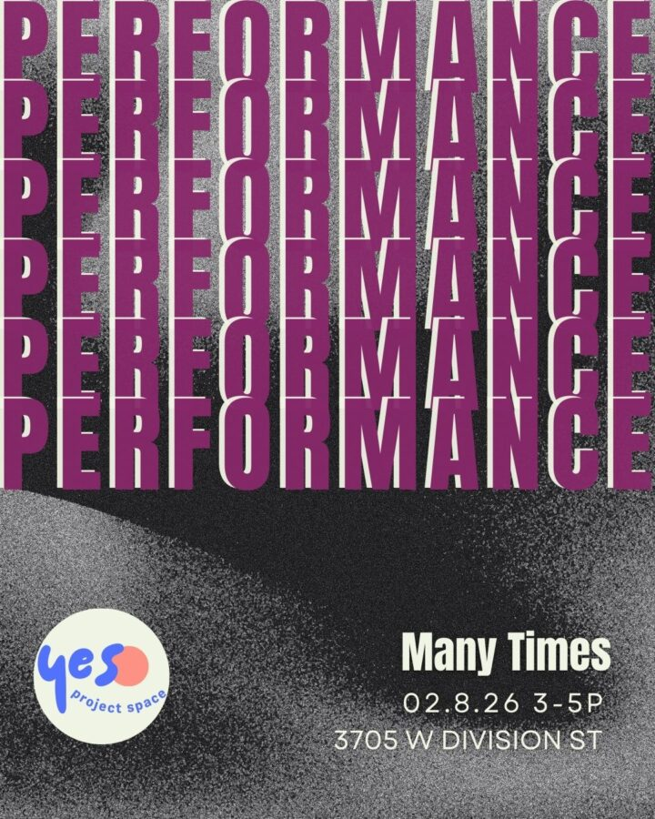

Many Times: Performance Afternoon
Join us for our first performance event of 2026. We will be featuring 4 of our Many Times artists in performances based in sound, video, ritual and declarations. We will start promptly at 3p and end promptly at 5p. We are excited to see you there!
The afternoon features Dennissa Young, Avin HannahSmith, maya nguyen and Madison Mae Parker